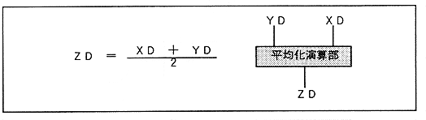

Each slot has two modulation inputs, X and Y. In order to combine these two inputs into one, it is necessary to perform addition. To prevent the addition result from overflowing, there is a method of adding after the two inputs are multiplied by 1/2. By adopting this method, SCSP converts two input data into one output data.
Suppose the input data is XD and YD, and the output data is ZD.
Figure 4.29: Averaging formula

Since this is the same as the formula for obtaining the average value, this calculation block is called the averaging calculation block.